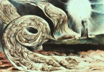

Enterramento 
Lêmure (solo)
Quem fez esta casa, espaço mesquinho,
A golpes de pá e de escavadeira?
Lêmure (coro)
Hóspede negro, vestido de linho,
estais muito bem nesta casa estreita.
Lêmure (solo)
Ninguém pôs a mesa na sala fria,
Nenhuma cadeira na sala magra.
Lêmure (coro)
Mobília emprestada, venceu a dívida.
Chegam os credores, quem é que paga?
Mefistófeles
Deitou-te o cadáver. A alma quer voar?
Mostro-lhe o pacto, em sangue subscrito.
Que lástima, se há meios de arrancar
Ao demônio – hoje em dia – um espírito...
A gente resiste aos antigos métodos,
E eu não me sinto adaptado aos novos;
Preciso agora de um banho de adeptos
Para fazer o trabalho de um só.
Tudo parece torto e contrafeito,
Usos, costumes, o velho direito!
Em nada mais se pode confiar.
Quando a alma, no último suspiro,
Fugia, eu a pegava num regiro
De unhas, rato prestes a escapar!
Hoje, em sair do seu reduto escuro,
Do asqueroso despojos a alma hesita.
Os elementos, no seu ódio surdo,
A expulsam dessa ignóbil guarita.
‑E quando? Onde? Como? - Horas a fio,
A questão me atribula, até o fastio.
A morte envelheceu, perdeu destreza;
Há sempre um se, já não se tem certeza.
Ávido, vejo uns membros quase rígidos -
Era ilusão! Agitam-se, estão vivos.
(conjurogesticulante como um fantásmeo cabeça-de-tropa)
Marcha batida! Venham todos! Presto!
Senhores do chifre, reto ou recurvo,
Da velha e revelha cepa do Cujo.
E tragam junto sa goelas do Inferno!
Por várias bocas o Inferno esgoela,
Pois vário é o grau da vítima engulida.
Se é que em futuro esta última regra
Do jogo não vai acabar vencida.
( A horrenda goela infernal se escancara, à esquerda)
Maxilas hiantes! O fogo em fúria
Flamirrompe da abóbada da gorja.
No mais fundo da fumaça purpúrea
A Urbe em chamas, qual eterna tocha.
Ressaca rubra rebate nos dentes,
A nado, os danados buscam salvar-se.
A enorme hiena os apresa, rangente,
Roja-os de volta na estrada que arde.
Há muito a descobrir. No espaço augusto
Dos nichos, se oculta um mundo medonho.
Aos pecadores não se poupe o susto;
Pensam que tudo é logro, jogo, sonho.
(aos diabigordos, de chifres curto e grosso)
Ó rubicundos, rubibochechudos
Patifes, que os enxofre do inferno aquece!
Pescocicurtos, maciços, parrudos,
Vigiai, lá embaixo, se algo fosforesce:
Desplumai-a! E implume inseto mesquinho
Com meu brasão quero vê-la estampada;
E dá-la ao fogo, à brasa em remoinho.
Perscrutar os domínios inferiores
Vos incumbe, ó Ventrudos, por tarefa.
Se é la´a região dos pendores,
Não se pode afirmar, é coisa incerta.
O umbigo é seu pouso mais seguro -
Cuidado, ou ela foge pelo furo!
(aos diabimagros, de chifres longo e torto)
E vós, escanifrados cabecilhas,
Varai o ar, varejai sem cansaço!
Braciabertos, as garras em cavilha,
Pegai tudo o que voe pelo espaço.
O gênio não suporta mais a casa
Em ruínas, quer fugir, bater asas...
(Desce uma auréola do céu, à direita)
Legião Celeste
Vinde, enviados,
Celialiados.
Em vôo suave:
Perdoai as penas,
Cinzas serenas
Reanimadas.
Nas Criaturas
Assinaturas
Deixai traçadas.
Ruflam as penas,
Revôos de ave!
Mefistófeles
(...)
Fausto de J. W. von Goethe
traduzido por Haroldo de Campos
25/09/2007
Cenas Finais do Segundo Fausto
PoetasAfins · publicado originalmente em 25/09/2007
19:40 — Escrito em PoetasAfins | Comentários registrados no original: 1 | Tags: Fausto Resgate da alma mefistófeles eterno feminino